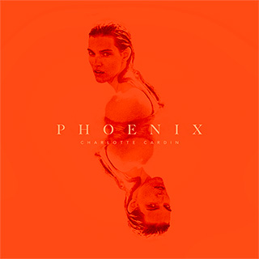

Phœnix, un premier album libérateur pour Charlotte Cardin
Radio-Canada
13 février 2021
Après deux microalbums – Big Boy (2016) et Main Girl (2017) –
qui l’ont fait voyager aux quatre coins du monde, Charlotte Cardin
est fin prête à dévoiler son premier album, Phoenix, qui sera lancé
le 9 avril prochain. La création de l’opus a été longue et ardue,
mais la chanteuse affirme avoir vécu une profonde transformation,
se rapprochant de sa véritable nature et se libérant du regard des
autres.
Au micro de Catherine Richer, chroniqueuse culturelle à l’émission
Le 15-18, on a pu entendre une Charlotte Cardin plus vulnérable qu’à
l’habitude, mais qui semblait aussi habitée d’une sagesse nouvelle.
Elle l’avoue d’ailleurs d’emblée : Phoenix est pour elle l’album des
remises en question et des réalisations sur sa personne.

Aller dans l’excès pour se sentir vivante
Depuis quelques années, la coqueluche de la pop québécoise sentait que
ce qu’elle vivait était de moins en moins ancré dans le réel et avait
envie de laisser libre cours à ses pulsions intérieures, même les plus
malsaines.
«Des fois on a juste besoin de saisir le moment présent, de vivre des
émotions fortes, quitte à ce qu’elles nous détruisent, parce qu’on préfère
choisir ça plutôt qu’un genre d’engourdissement qui est stable»,
explique-t-elle à propos du thème de Meaningless, troisième simple à être
lancé en vue de l’album après Daddy et Passive Aggressive.
La jeune femme de 26 ans avait envie de «choisir la pure expérience plutôt
que quelque chose qui est rationnel, bon pour nous, et qu’on fait pour plaire
aux autres.»
Meaningless, coécrite comme la majorité de l’album avec son bon ami Jason
Brando, est une chanson à propos des excès qu’on pousse parfois pour vérifier
si on est encore vivant, «dans un monde où tout est superflu et rien n’a vraiment
de sens.»
«C’est un thème qui s’applique à des relations amoureuses, mais aussi à toutes
sortes de relations fortes, que ce soit les dépendances ou les relations familiales.»
Comprendre les raisons derrière la dépression
Dans un élan de candeur inattendu, Charlotte Cardin a également parlé d’un
passage peu connu de sa jeunesse, qu’elle traîne toujours avec elle.
«C’est quelque chose que peu de gens savent, mais quand j’étais très jeune,
j’ai fait une dépression. J’ai vraiment vécu des moments super sombres. Et
je n’ai jamais vraiment pris le temps de regarder en arrière et de comprendre pourquoi»,
explique-t-elle. Sans aller dans les détails de l’épisode en question, la chanteuse
explique que les angoisses de cette époque sont revenues la hanter dans les dernières années.
«J’ai vraiment réalisé que toute ma vie, j’ai eu des moments où je me sentais très vide. Je
ne savais pas vraiment pourquoi et c’est quelque chose que je découvre encore.»
Mort et résurrection du phénix
Cette résurrection s’est aussi accompagnée d’une «colère de ne pas avoir réalisé ces choses-là avant».
«C’est un peu ça que représente le phénix, cette dualité entre la croissance personnelle – et donc
la renaissance du phénix – et cette honte, ces regrets de ne pas avoir su ces choses-là avant et
de sentir qu’on veut plaire aux gens sans trop savoir pourquoi, ce qui représente un peu plus le
côté de la mort du phénix.»
Le public peut donc s’attendre à découvrir sur Phoenix une nouvelle Charlotte Cardin, une artiste qui
assume ses contradictions et qui ne cherche plus à plaire à tout prix.
«Je suis rendue à un âge où, en vérité, il y a vraiment une partie de moi qui est rendue à s’en
câl***** de ce que les gens pensent.»
«Cet album a vraiment été fait sans compromis et c’est pour [cette raison] que ça a pris autant de
temps de le faire et que j’en suis aussi fière», affirme-t-elle.
Disponible à partir du 9 avril 2021, Phoenix a été coécrit et produit avec Jason Brando et Marc-André
Gilbert. Le vidéoclip de Meaningless est signé Norman Wong et est produit par Colossale.